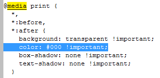

Introduction
While Jupyter notebook has a built-in facility for multiple output formats, its use depends on OS platform and requirements on the output file. Perhaps the most requested output is pdf format currently done in two-steps: html to latex to pdf.1 Unfortunately for those working on Windows, Latex rendering requires installation of MiKTexT, Tex Live preferred by Jupyter and Latex editor, such as TeXstudio. The process of getting output similar to the original notebook is quite convoluted and impractical. An alternative solution is to print notebook directly to pdf format, assuming that one has installed the pdf writer (driver) on Windows. Print-to-pdf is the done by choosing the pdf from the list of available printers in the print dialog.
Let's start with an illustration of sample Jupyter notebook as rendered by Jupyter.
Fig. 1. Rendering of the original Jupyter notebook.
Alternatively, the complete Jupyter notebook is at this link: Sample_ipynb.ipynb First, we export the notebook as html file:
Fig. 2. Exporting notebook as .html file.
Color rendering
Printing the notebook directly (File -> Print Preview -> print (Ctrl+P)) to a printer device renders the notebook in black and white2.
Fig. 3. B&W rendering of html file at the print.
The culprit here is one line in the embedded style under the @media print section, specifically, color: #000 !important. This instruction overwrites default and custom colors, setting black-white as default print output.

Fig. 4. css/style instructions to overwrite colors.
This offending line is coming from the Bootstrap 3 .less template, which is part of the Jupyter notebook styling. There are three solutions:
- one is to edit out this line in the
.lessfile and recompile the new defaultcssfile for notebooks. - the second solution is to comment out the
color: #000 !importantline in thestyle.min.cssfile3, and - the third approach is to remove the same line from the embedded style section in exported (rendered)
htmlfile. Last two approaches are demonstrated here.
Editing Bootstrap style.min.css file:
Locate the Jupyter default style sheet style.min.css in:
minconda3\Lib\site-packages\notebook\static\style\style.min.css
or
minconda3\envs\[your_environment]\Lib\site-packages\notebook\static\style\style.min.css
and search for the phrase #000 !im. Comment out the line shown below and save:
@media print {
*,
*:before,
*:after {
background: transparent !important;
/*color: #000 !important;*/ /*<---- comment out this line*/
box-shadow: none !important;
text-shadow: none !important;
}
Editing the rendered .html file file
After creating html file in Jupyter notebook like so:
File -> Download as -> HTML (html)
comment out the same line as above and save.
Code Cells
Since notebooks are often used for education and collaborative projects, output of the code cells has been often a desired feature. On the other hand, should the ultimate result be a report for the customer, code cells could be quite distracting.
Fig. 5. Report with visible code cell.
One way to suppress visibility of code cell is to use JQuery (javascript) in the separate Jupyter cell as per4,5:
# Run (once) to allow nice html output as report (optional)
"""
Hide code cells in an IPython notebook or exported HTML using javascript.
"""
import IPython.core.display as di
# This line will hide code by default when the notebook is exported as HTML
di.display_html(
'<script>jQuery(function() {if (jQuery("body.notebook_app").length == 0) { jQuery(".input_area, .output_stderr").toggle(); jQuery(".prompt").toggle();}});</script>', raw=True)
CSS = """.input_area .output_stderr {height: 2.0em; overflow: hidden}""" # changes input_subarea width to 1 visible line
HTML('<style>{}</style>'.format(CSS))
# This line will add a button to toggle visibility of code blocks, for use with the HTML export version.
di.display_html('''<button onclick="jQuery('.input_area').toggle(); jQuery('.prompt').toggle();">Click in rendered .html output only, toggles the code</button>''', raw=True)
We can toggle visibility of the code in the html report (rendered output) displayed in the browser.
To remove the code completely, one can add a Jinja2 template into nbconvert-templates directory. For example, create file report.tpl with the following content and place it into the html directory under template folder6.
{%- extends 'full.tpl' -%}
{%-block input_group scoped-%}
{%- if 'jupyter:' and cell.cell_type == 'code'-%}
{%- endif -%}
{%-endblock input_group -%}
The full default path to your Jupyter templates is:
# In my case
C:/miniconda3/envs/[my_environment]/Lib/site-packages/nbconvert/templates/html
# or in general
your_Python_path/Lib/site-packages/nbconvert/templates/html
Then add the following cell at the end of your Jupyter notebook:
# Create output with a template. Input code is removed
from nbconvert import HTMLExporter
import codecs
import os
# Prepare a date/time stamp to prepend to the report filename
stamp = datetime.today().strftime("%m_%d_%Y")
exporter = HTMLExporter(template_file='report.tpl')
output, resources = exporter.from_filename('Sample_ipynb.ipynb')
new_fnm = stamp + '_sample_report.html'
codecs.open(new_fnm, 'w', encoding='utf-8').write(output)
In this particular case, file called sample_report.html with prepended date-stamp will be created in your notebook directory.
Now, for the completeness, we can add one more cell with code to remove the color: #000 !important line from the html file:
# Delete 'print B&W' instruction in css/style section
program = open(new_fnm, "r")
lines = program.readlines()
program.close()
f = open(stamp + '_sample_report_print.html', "w")
for line in lines:
if not line.startswith(' color: #000 !important'):
f.write(line)
f.close()
os.remove(new_fnm)
Here is the rendered version of the notebook just before printing with link to complete html file: sample_report_print
Fig. 6. Final report at the print stage.
Other ways to create reports
To further customize the appearance of the report, html file without the code cells and stripped of the color: #000 !important line, the file is first rendered in the browser, its content selected (ctrl+a, ctrl+c) and pasted into new MS Word (Google Docs) document.
The style of paragraphs and tables can be changed in the word editor.
At this point, we should be very close to the final report style with a much improved visual appeal.
References:
- Jessica Yung, Converting Jupyter Notebooks to PDFs ↩
- GitHub, Color printing should be an option ↩
- Ilho Song, Mid the Gap ↩
- Max Masnick, how-to-hide-code-from-cells-in-ipython-notebook-visualized-with-nbviewer ↩
- Jörg Dietrich, Blogging with IPython and Collapsible Input Cells ↩
- Gregory Ashton, Ipython NBConvert latex template to hide code ↩
Comments
comments powered by Disqus